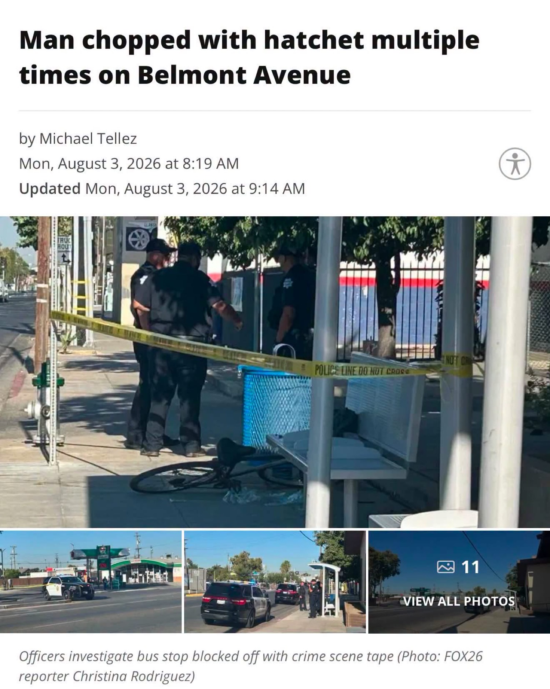

What Happened
Location & Time
Belmont Avenue and Effie Street
Approximately 7:45 a.m., Monday, August 3, 2026
Distance From My Door
0.78 miles
721 E La Sierra Drive to the intersection
Victim
Man on bicycle with a friend
Stabbed near right rib cage and back with a small hatchet. Stable condition at hospital.
Suspect
Emerged from neighborhood
Argument preceded the attack. No arrest reported at time of initial coverage.
Source: Fresno Police via Sgt. Diana Trueba Vega, reported by The Fresno Bee and FOX26.
The Map Is Not Abstract
La Sierra Drive sits in the Tower District. Belmont and Effie sit just southeast of it, still well inside the same City Council district. District 3 covers the Tower District, downtown, Chinatown, southwest Fresno, and related neighborhoods. The current councilmember is Miguel Arias, term-limited this cycle.
On February 16, 2026 I made the decision not to turn in the signatures I had collected to run for that seat. The paperwork stayed in the drawer. This morning the distance between my door and a hatchet attack measured under eight-tenths of a mile.
That is not a long walk. It is not a long bike ride. It is the same political geography.
What the Voters Keep Choosing
This area has a fully developed culture around the management of visible disorder. The services, the nonprofit ecosystems, the political rhetoric, and the daily street reality all reinforce one another. A large share of public attention and funding flows toward populations that include homeless drug users who carry weapons and settle scores over stolen pipes, stolen bikes, or personal insults with blades and blunt objects.
The voters who live here, and the voters who dominate the coalitions that decide District 3 outcomes, have repeatedly selected representatives and policies that treat this arrangement as the baseline. They are not being tricked. They are receiving the product they ordered.
Leadership that would treat public safety as the first non-negotiable, that would demand measurable reductions in open drug markets and weaponized street disputes, and that would stop expanding the service infrastructure that stabilizes the problem rather than ending it, is not the leadership this district currently rewards. I looked at the signature requirement, the likely coalition math, and the daily evidence on the ground, and I chose not to spend the next year fighting that current.
The hatchet on Belmont this morning is not an aberration. It is a data point consistent with the pattern. A man on a bicycle, an argument, a small hatchet from the neighborhood, a bus stop closed with yellow tape, officers standing in the morning light. Less than a mile from a residential street that is supposed to be part of the same community.
The Choice Stands
I will continue the High Tower District work on the ground, the crime-watch documentation, the practical challenges, the independent reporting. I will not pretend that running for the District 3 seat would have changed the cultural preference that keeps producing these outcomes.
The area does not want that kind of leadership right now. It is voting, consistently, for the services and the tolerance structure that surround the fights over crack pipes and the hatchets that follow. That is the record. This morning simply put the measurement in miles.
Sources
- The Fresno Bee, “Man riding bicycle on Belmont attacked by suspect with hatchet, Fresno police say,” August 3, 2026.
- FOX26 / KMPH coverage and photo by reporter Christina Rodriguez.
- Fresno Police Department statements via Sgt. Diana Trueba Vega.
- City of Fresno Council District 3 official page and adopted district map.
- Distance calculated from coordinates of 721 E La Sierra Drive (36.7525, -119.8018) to 474 N Effie Street near the intersection (36.7499, -119.7882).